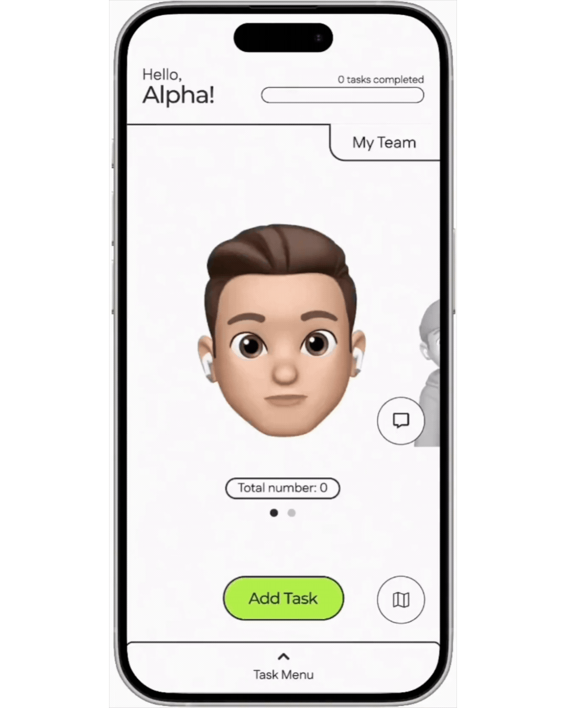
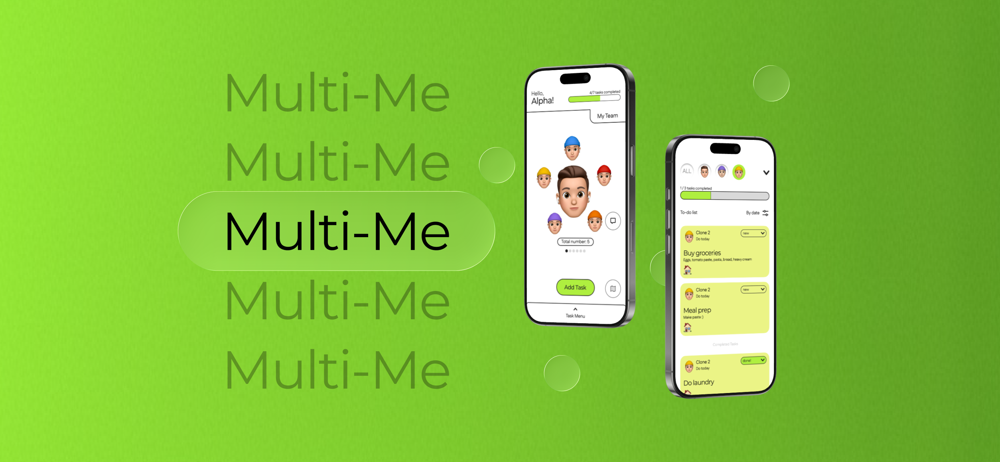
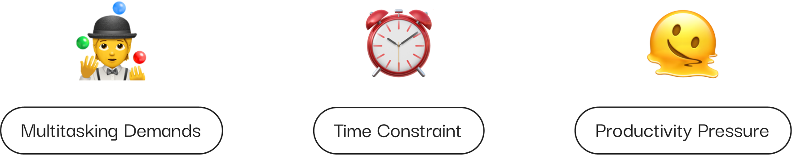
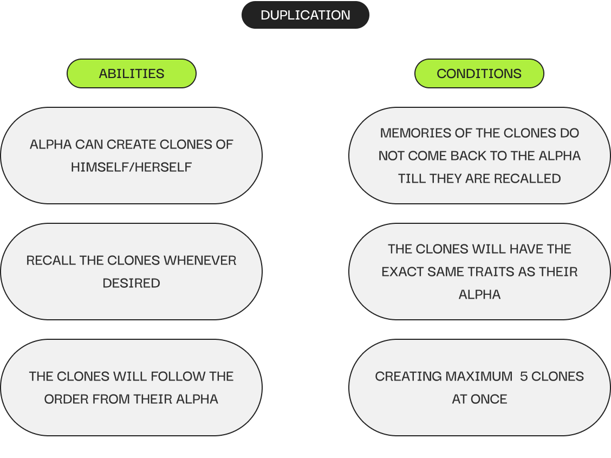
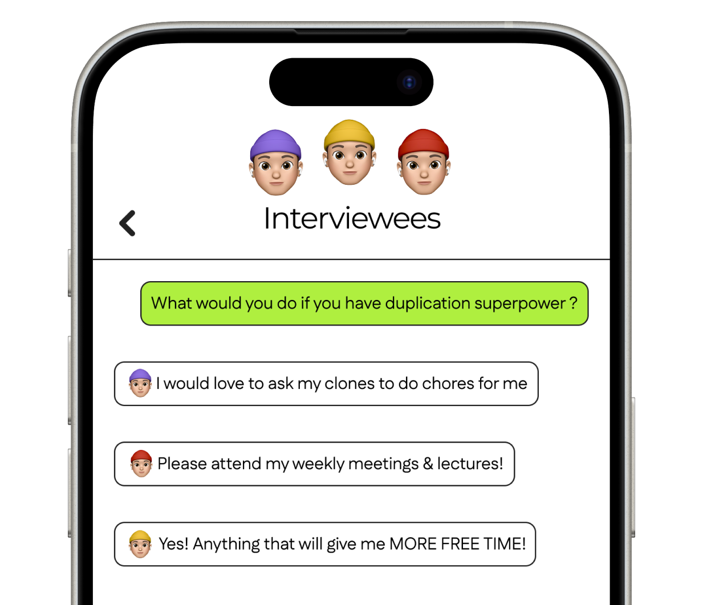
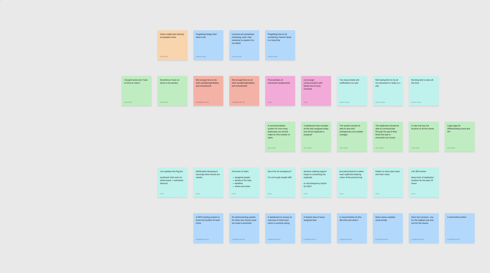
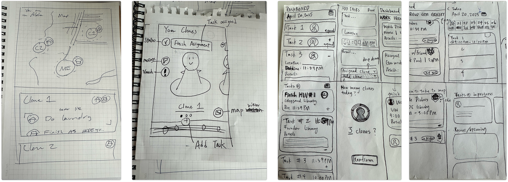
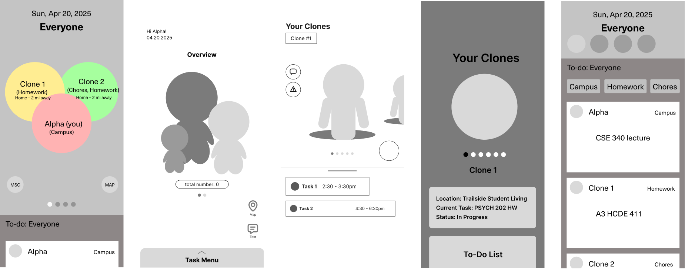
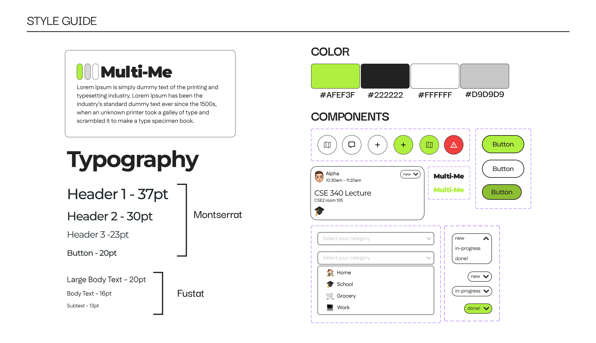
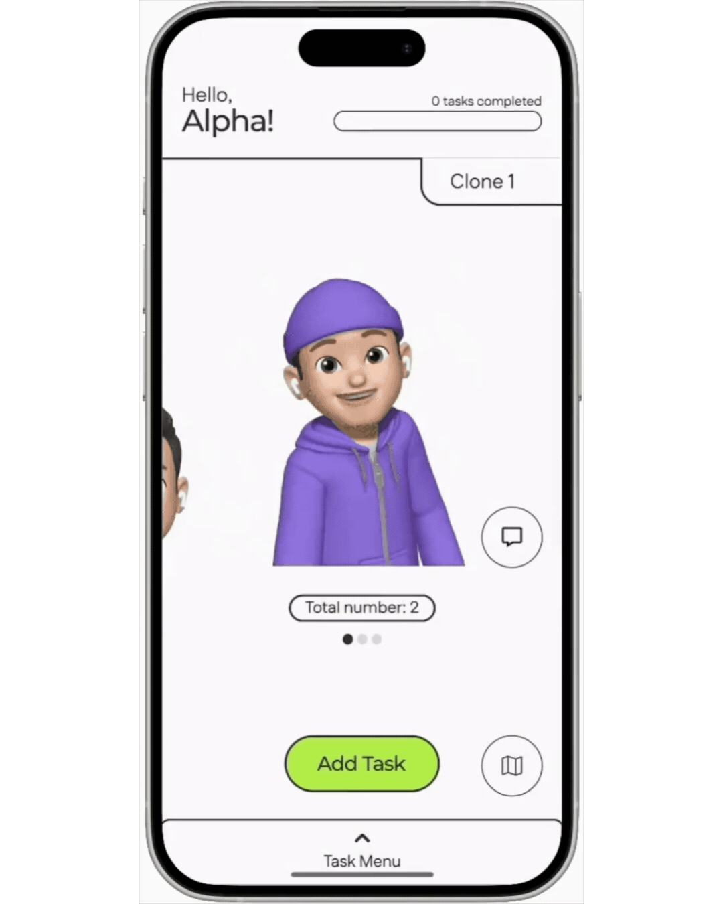

The dashboard provides the alpha with a holistic view of their clones. When the day starts, they can log how many clones they have and create new tasks.

Multi-Me
A management tool for people coordinating life with their own clones.
Multi-Me is a Figbuilds hackathon project that reimagines productivity for individuals with the power to duplicate themselves. Designed to help Alphas coordinate with up to five clones, the tool includes a Clone Dashboard, task creation system, location-based Map & Messaging, and a streamlined To-Do List. The project explores how design can bring clarity and structure to a multi-self lifestyle.
With school, work, meetings, and events constantly taking up our day, we often find ourselves overwhelmed by our demanding schedules and daily routine.



create a management system for duplication superpower users to help coordinate and stay aligned with their own clones to maximize productivity without losing control or focus?
Identifying shared pain points




A duplication management tool designed to help “Alphas” coordinate tasks, communication, and productivity across up to five clones.

The dashboard provides the alpha with a holistic view of their clones. When the day starts, they can log how many clones they have and create new tasks.

Tasks are created and set similarly to other scheduling apps. Each task is paired with a category and icon, making it easier for clones to prioritize tasks.

The alpha doesn’t want to get caught using their clones, so Multi-Me alerts the alpha if two or more clones are too close to each other. Using the messaging feature, the Alpha can communicate to their clones.

Alpha has the ability to manage their tasks across all the active clones. Their to-do list can be filtered by individual clone to clearly see who is assigned to what. Each task card clearly displays relevant details, including time, location, and assigned personnel, as well as progress status, making it easy to monitor workload distribution and overall productivity.
01
A weekly and monthly calendar view to allow for longer tasks that take multiple days.
02
User testing with different types of organizational styles and habits. We need to design for the varying ways people may interact with our tool.
03
Developing the clone-side user interface and user experience.